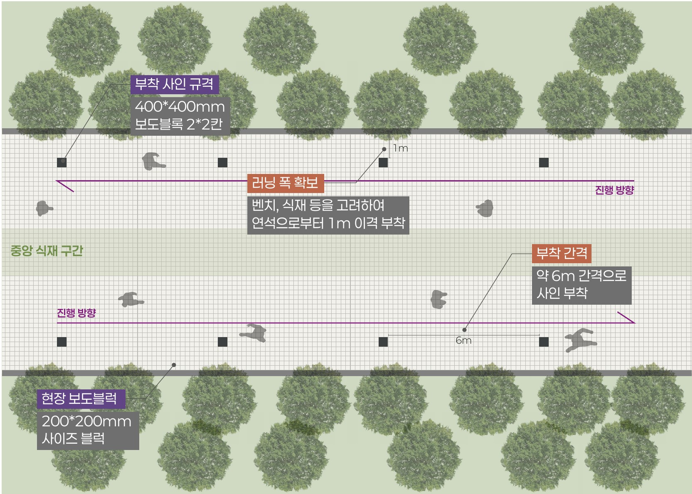
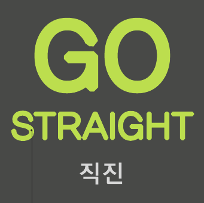

유학생의 언어·교류 장벽에서 출발한 기획은
구간을 넓히며 두 안내 방식의 비교로 좁혀졌다
착수 문제의식
유학생의 언어·교류 장벽
러닝 공간 구체화
순환 러닝 코스와 안내 지점 · 연세대 국제캠퍼스 방면 구간
글로벌캠퍼스로 구간 확장
교차로·횡단보도·직진·회전 구간 구분 · 보도블록 교체 대신 시트 부착
안내 방식 비교
픽토그램형 ↔ 영문·한국어 병기형
영문 두께·대비 강화
1차 픽토그램·숫자, 2차 영문 텍스트 구조는 유지(부분 반영)
1차 · 2차 러닝
1차 11.20–21, 2차 11.[00]–[00] 금·토 · 러닝크루 정기 러닝
6월 11일 착수보고의 출발점은 장소보다 사람이었다. 유학생이 한국 생활에서 부딪히는 언어와 교류의 장벽을 문제로 놓고, 그 장벽을 낮출 일상의 활동을 찾았다. 이 단계에서는 무엇을 어디에 설치할지보다 어떤 활동이 언어 없이도 사람을 이어 줄 수 있는지가 질문이었다.
9월 9일 중간보고에서 활동은 러닝으로 정해졌고, 장소는 순환 러닝 코스와 안내 지점으로 구체화되었다. 당시 실험 구간은 캠퍼스타운역에서 연세대 국제캠퍼스 방면으로 이어지는 공원 구간이었고, 러닝 동선을 분리해 3m마다 표준 보도블록을 설치하는 안이었다.
2차 부서검토에서 두 가지가 바뀌었다. 하나는 범위다. 연세대와 인천가톨릭대 등 글로벌캠퍼스 일대까지 구간을 넓히라는 의견에 따라, 실험 구간은 글로벌캠퍼스를 한 바퀴 도는 순환 코스로 다시 그려졌고, 주요 교차로와 횡단보도, 직진과 회전 구간을 나누어 구간별 거리와 설치 위치를 정하였다. 다른 하나는 방식이다. 보도블록을 교체하면 원상복구가 문제가 되므로, 블록은 그대로 두고 그 위에 시트를 붙이는 방식으로 바꾸었고, 구간 안의 개수와 위치, 동선 연결을 표기하였다.
10월 15일 기획에서 비교의 틀이 섰다. 같은 코스, 같은 자리에 1차는 픽토그램형, 2차는 영문·한국어 병기형 사인을 붙여 안내 방식만 바꾸는 구조다.
위원회 사전검토와 심의에서는 영문 글자의 두께와 바탕 대비를 높이고 방향 화살표와 픽토그램을 함께 표시하라는 의견이 나왔다. 두께와 대비는 반영했지만, 화살표와 픽토그램을 영문 사인에 더하면 두 안의 차이가 흐려진다. 전문가 자문을 거쳐 1차는 픽토그램과 숫자, 2차는 영문 텍스트로 두는 구조를 유지하고 의견은 부분 반영으로 정리하였다.

공원 한 구간연세대 국제캠퍼스 방면

순환 코스글로벌캠퍼스 일대 11개 구간
3m마다 설치
블록 교체원상복구 부담

바닥 시트 부착400×400 · 약 6m 간격
그림 · 숫자1차 픽토그램 사인

영문 + 한국어2차 같은 자리 교체
무엇이 언어 없이 사람을 잇는지가 질문
같은 코스에서 안내 방식만 바꿈